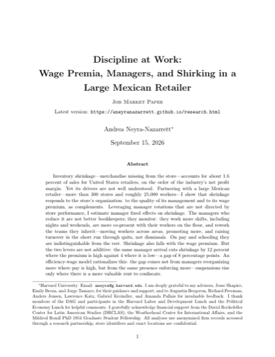
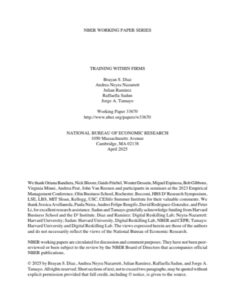
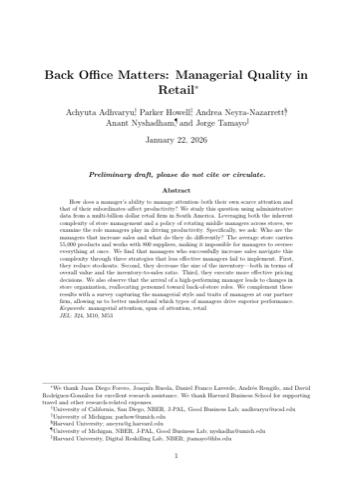
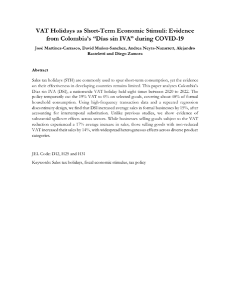

Andrea Neyra-Nazarrett
PhD Candidate in Political Economy and Government (Economics Track), Harvard University

I am a PhD candidate at Harvard University working in organizational and personnel economics. I study how wages, managers, and firm practices shape worker effort and productivity, using rich administrative data from firms across Latin America. I am affiliated with the Harvard Kennedy School, the Weatherhead Center for International Affairs, the Digital Reskilling Lab (D³ Institute) at Harvard Business School, the Institute for Quantitative Social Science (IQSS), and the Department of Economics.
I am on the 2026–2027 academic job market.
Before my doctoral studies I earned an MPP from the Harvard Kennedy School, where I was a Fulbright–García Robles Scholar, and a BA in Economics from ITAM (Instituto Tecnológico Autónomo de México). I previously worked as a research assistant at the World Bank and the Inter-American Development Bank.
I am originally from Toluca, Mexico. Outside of research, I run marathons, swim in open water, and read widely about what makes workers and organizations productive — I am always happy to trade book recommendations.
Job Market Paper
-

Discipline at Work: Wage Premia, Managers, and Shirking in a Large Mexican Retailer
Job Market PaperLatest version (PDF) · September 2026 draft
Inventory shrinkage—merchandise missing from the store—accounts for about 1.6 percent of sales for United States retailers, on the order of the industry's net profit margin. Yet its drivers are not well understood. Partnering with a large Mexican retailer—300 stores and 25,000 workers—I show that shrinkage responds to the store's organization: to the quality of its management and to its wage premium, as complements. Leveraging manager rotations that are not directed by store performance, I estimate manager fixed effects on shrinkage. The managers who reduce it are not better bookkeepers; they monitor: they work more shifts, including nights and weekends, are more co-present with their workers on the floor, and rework the teams they inherit—moving workers across areas, promoting more, and raising turnover in the short run through quits, not dismissals. On pay and schooling they are indistinguishable from the rest. Shrinkage also falls with the wage premium. But the two levers are not additive: the same manager arrival cuts shrinkage by 12 percent where the premium is high against 4 where it is low—a gap of 8 percentage points. An efficiency-wage model rationalizes this: the gap comes not from managers reorganizing more where pay is high, but from the same presence enforcing more—suspensions rise only where there is a more valuable rent to confiscate.
Working Papers
-

Training Within Firms
with B. Diaz, J. Ramirez, R. Sadun, and J. Tamayo · NBER Working Paper No. 33670
Training investments are essential for improving worker and firm productivity, yet their implementation is often hindered by low participation rates and insufficient worker engagement. This study uses data from three firms—a car manufacturer, a quick-service restaurant chain, and a retail company—to show that variation in training participation among employees is closely tied to differences in middle managers’ behavior and practices. Middle managers who actively engage with their employees and emphasize their well-being and development are associated with significantly higher participation in training programs. These managerial differences significantly influence employee performance and absenteeism, especially during periods of organizational change. Together, these findings underscore the importance of middle managers in bridging the gap between centrally designed HR policies and their effective on-the-ground execution.
-

Back Office Matters: Managerial Quality in Retail
with A. Adhvaryu, P. Howell, A. Nyshadham, and J. Tamayo
How does a manager’s ability to manage attention—both their own scarce attention and that of their subordinates—affect productivity? We study this question using administrative data from a multi-billion dollar retail firm in South America. Leveraging both the inherent complexity of store management and a policy of rotating middle managers across stores, we examine the role managers play in driving productivity. The average store carries 55,000 products and works with 800 suppliers, making it impossible for managers to oversee everything at once. We find that managers who successfully increase sales navigate this complexity through three strategies: they reduce stockouts, they keep a leaner inventory, and they execute more effective pricing decisions. The arrival of a high-performing manager also leads to changes in store organization, reallocating personnel toward back-of-store roles. We complement these results with a survey capturing the managerial style and traits of managers at our partner firm.
-

VAT Holidays as Short-Term Economic Stimuli: Colombia’s “Días sin IVA”
with J. Martinez-Carrasco, D. Muñoz-Sanchez, A. Rasteletti, and D. Zamora · IDB Working Paper
Sales tax holidays are commonly used to spur short-term consumption, yet the evidence on their effectiveness in developing countries remains limited. This paper analyzes Colombia’s Días sin IVA, a nationwide VAT holiday held eight times between 2020 and 2022, which temporarily cut the 19% VAT to 0% on selected goods covering about 40% of formal household consumption. Using high-frequency transaction data and a repeated regression discontinuity design, we find that the policy increased average sales in formal businesses by 15%, after accounting for intertemporal substitution — with substantial spillovers to goods whose VAT was not reduced.
More about my research →